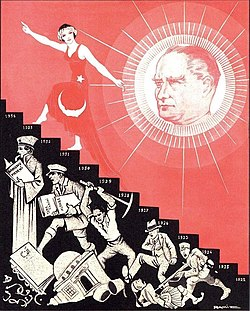

Velkommen til Akdağ AS nettside

The leading legal reforms instituted included a secular constitution
(laïcité) with the complete separation of government and religious
affairs, the replacement of Islamic courts and Islamic canon law with a
secular civil code based on the Swiss Civil Code, and a penal code based
on that of Italy (1924–37).